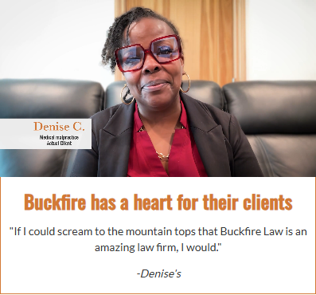
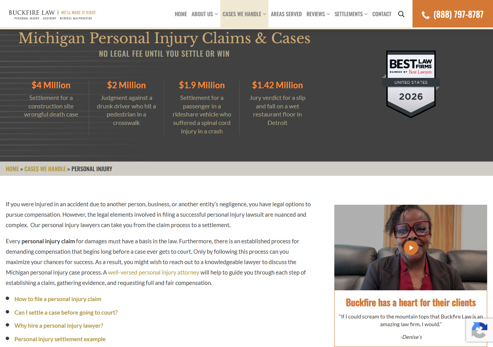

Buckfire Law — testimonial video card on internal case-type pages
100052509 · /case-types/personal-injury/ · Convert.com ·
tested 4 August 2026 · 6 browser projects, desktop + mobile · checked against the supplied Figma
Summary
37 tests × 6 browsers. The card renders correctly and matches the Figma on every browser, desktop and mobile — correct placement above the contact form, exact copy, exact colours and type, correct 428∶240 ratio, and the video decodes and plays everywhere.
The 12 failures are 2 issues reproducing identically on all 6 browsers (2 × 6 = 12) — not 12 distinct problems, and none browser-specific: a copy typo in the attribution, and the absence of any keyboard path to playback.
v2.js:5 still reads variation_name = "BuckfireLaw_12" — the same body class
as experiment 100052508 (the Client Stories carousel), and every rule in
v2.css is scoped to html body.BuckfireLaw_12. Nothing visibly breaks today
because the two target different URLs, but it leaves two live experiments sharing one namespace.
Scope & environment
| Item | Value |
|---|---|
| Variation URL | ?utm_campaign=cre_qa&_conv_eforce=100052509.1000256557 |
| Control URL | ?utm_campaign=cre_qa&_conv_eforce=100052509.1000256556 |
| Source under test | local_testing/Local2/variation/v2.js (102 lines) · v2.css (79 lines) |
| Spec | my-playwright-project/testing/buckfire-personal-injury-testimonial.spec.js |
| Design reference | Client Figma screenshot, 4 Aug 2026 (desktop + mobile boards) |
| Injection | insertAdjacentHTML('beforebegin', …) on .page-parent.page-child .section .blog-sidebar |
| Component prefix | testimonial-card__ · body class BuckfireLaw_12 |
| Viewports | 1600 · 1280×900 · 768×1024 · 390×844 + Pixel 5 and iPhone 12 device profiles |
| CDN assets | thumbnail_4.png, Test12_video2.mp4 — both return 206 on ranged GET |
utm_campaign=cre_qa,
whereas exp. 100052508 on this same client uses cro_mode=qa. Copy the force URL from the
ticket rather than adapting the sibling test's.
Results by browser
| Project | Passed | Failed | Video playback | Failure identity |
|---|---|---|---|---|
| Chrome Desktop | 35 | 2 | ✓ decodes & plays | TC-13, TC-33 |
| Firefox Desktop | 35 | 2 | ✓ decodes & plays | TC-13, TC-33 |
| Edge Desktop | 35 | 2 | ✓ decodes & plays | TC-13, TC-33 |
| Safari Desktop (WebKit) | 35 | 2 | ✓ decodes & plays | TC-13, TC-33 |
| Mobile Chrome (Pixel 5) | 35 | 2 | ✓ decodes & plays | TC-13, TC-33 |
| Mobile Safari (iPhone 12) | 35 | 2 | ✓ decodes & plays | TC-13, TC-33 |
Disclosure on the count: the full matrix ran with an earlier TC-22 that produced a false failure (see below). After correcting it, TC-22 and the new TC-22b were re-verified on Chrome and Firefox. On the other four they rest on TC-08 (poster loads) and TC-23 (pointer cursor), both of which already passed on all 6 — so they are reported as expected-pass, not as a re-run.
Figma comparison
Every measurable value from the design board was asserted against the live render:
| Design property | Figma / CSS intent | Measured live | |
|---|---|---|---|
| Card position | Right column, above "How can we help you?" | x=868 y=597; sidebar at x=868 y=986 | Match |
| Card width | 428px max, fills the column | 397px @1280, capped at 428 @1600 | Match |
| Media ratio | 428 ∶ 240 = 1.783 | 1.783 | Match |
| Title colour | #D37935 | rgb(211, 121, 53) | Match |
| Title type | 24px / 600 / 36px line-height | 24px / 600 / 36px | Match |
| Quote | #363737 14px / 20px, centred | rgb(54, 55, 55) 14px / 20px, centred | Match |
| Attribution | Italic 14px, centred | Italic 14px | Match |
| Card borders | #D37935 left/right/bottom, flush to image on top | Accent on 3 sides, border-top-width: 0px | Match |
| Headline copy | "Buckfire has a heart for their clients" | Identical | Match |
| Quote copy | "If I could scream to the mountain tops…" | Identical | Match |
| Play button | Orange circular button, centred on poster | Present — baked into the poster PNG | Match |
| Attribution copy | -Denise's (as drawn in the Figma) | -Denise's | Typo in the design — BUG-01 |
The play button question — worth reading
DOM probing initially suggested the Figma's orange play button had never been built:
.testimonial-card__play-button count 0, no <svg> in
the media box, no author pseudo-element on either the media div or the poster. On that evidence alone
it looks like a clear design mismatch.
The screenshots disprove it. The button is plainly visible in the idle state and
gone in the playing state — because the poster is swapped out. It is drawn into
thumbnail_4.png. Design intent is met; there is no missing element.
Two real consequences survive, both minor: the code still references a play-button class that never renders (BUG-04), and the entire visible affordance depends on that one PNG loading (BUG-05).
Lesson worth keeping: never file a design element as "missing" from DOM absence alone — poster artwork can carry it. Confirm against a screenshot first.
Findings
variation_name = "BuckfireLaw_12" is the class used by the Client Stories carousel
experiment, and every rule in this stylesheet is scoped to html body.BuckfireLaw_12.
Two live experiments share one namespace.
Nothing breaks today because they target different URLs. But if either is extended to the other's
page, the other's CSS activates with it, and the shared class makes Convert-side debugging and
analytics segmentation ambiguous. Rename to e.g. BuckfireLaw_13 before launch — same
class of issue as SWF137 → CRE-T-144's EventHandlerAddedTest137 collision.
Nothing in the card is focusable — .testimonial-card__media and
.testimonial-card__thumb both report tabIndex −1, with no
role and no aria-label. The click handler is bound to the poster
<img> only, and native controls appear after the first
click, so a keyboard user can never start playback. Because the play button is poster artwork there
is also no real control for assistive tech to announce.
Fix: wrap the media in
<button type="button" aria-label="Play Denise C.'s testimonial">, or add
tabindex="0" + role="button" + an accessible name + an Enter/Space keydown
handler. Folding BUG-05 into the same change gives you a real element to attach this to.
The card renders -Denise's. The video's own lower-third caption reads
“Denise C. — Medical malpractice — Actual Client” (visible in the playing screenshot), so
the intended attribution is -Denise C.
The Figma board shows the same -Denise's string, so the typo
originates in the design, not the build — worth raising with whoever produced the Figma rather than
only patching the code. The sibling experiment renders this person as – Denise, so the
two tests are also inconsistent with each other (hyphen vs en-dash, possessive vs plain).
.testimonial-card__play-button referenced but never rendered
v2.js:55, 76v2.js:55 looks the class up, so playBtn is always null, and
v2.js:76 includes it in the live() delegation selector where it can never
match. Only .testimonial-card__thumb is actually clickable. Either render the element
or drop both references.
Because the button is artwork inside thumbnail_4.png, a 404 or slow load leaves an
empty black 428∶240 box with no indication it is a video. The click target still works but becomes
undiscoverable. A CSS or SVG overlay would be resilient and would give BUG-03 something
focusable to attach to.
waitForElement called with 4 arguments but accepts 2
v2.js:85-89 vs v2.js:10The call passes (selector, callback, 50, 15000); the signature is
(selector, trigger) and the interval/timeout are hardcoded inside, so the extra
arguments are silently ignored.
It works — but this is the exact shape of CRE-T-144's BUG-E, where waitForjQuery was
called without its interval/timeout, both resolved to undefined, and the poll raced its
own cleanup timer. Someone will eventually assume these parameters do something. Either accept and
use them, or drop them from the call.
All test cases
| # | Group | What it checks | Result |
|---|---|---|---|
| TC-01 | Control | No variation class, no card; sidebar anchor present | Pass ×6 |
| TC-02 | Injection | Body class applied | Pass ×6 |
| TC-03 | Injection | Exactly one card (dedup guard) | Pass ×6 |
| TC-04 | Placement | Card is immediately before .blog-sidebar | Pass ×6 |
| TC-05 | Placement | Aligns with sidebar column, renders above the form | Pass ×6 |
| TC-06 | Placement | Lands in the right-hand column, not main content | Pass ×6 |
| TC-07 | Structure | Video, poster, title, quote, attribution all present | Pass ×6 |
| TC-08 | Structure | Poster loads from CDN (naturalWidth > 0) | Pass ×6 |
| TC-09 | Structure | Lazy: no src, preload=none, playsinline, video hidden | Pass ×6 |
| TC-10 | Content | Title matches the design | Pass ×6 |
| TC-11 | Content | Quote matches the design | Pass ×6 |
| TC-12 | Content | Attribution matches the design string | Pass ×6 |
| TC-13 | Content | Attribution is a name, not a possessive | Fail ×6 — BUG-01 |
| TC-14 | Content | Poster has descriptive alt text | Pass ×6 |
| TC-15 | Styling | Title accent colour, 24px, 600, 36px | Pass ×6 |
| TC-16 | Styling | Quote colour, size, line-height, centring | Pass ×6 |
| TC-17 | Styling | Attribution italic at 14px | Pass ×6 |
| TC-18 | Styling | Accent borders on 3 sides, none on top | Pass ×6 |
| TC-19 | Styling | Body content centre-aligned | Pass ×6 |
| TC-20 | Styling | Media box holds 428∶240 | Pass ×6 |
| TC-21 | Styling | Card capped at the 428px design width | Pass ×6 |
| TC-22 | Affordance | Play affordance present (poster artwork carries it) | Pass — corrected, see disclosure |
| TC-22b | Affordance | Documents the dead play-button selector | Pass — BUG-04 |
| TC-23 | Affordance | Poster shows a pointer cursor | Pass ×6 |
| TC-24 | Video | Click assigns src and enables controls | Pass ×6 |
| TC-25 | Video | Poster swaps out, video swaps in | Pass ×6 |
| TC-26 | Video | Decodes and plays — currentTime advances | Pass ×6 |
| TC-27 | Video | Metadata resolves, no MediaError | Pass ×6 |
| TC-28 | Video | Video fills the media box once playing | Pass ×6 |
| TC-29 | Video | Re-click does not rewind to 0 | Pass ×6 |
| TC-30 | Responsive | Mobile 390 — visible, fits viewport, ratio holds | Pass ×6 |
| TC-31 | Responsive | Tablet 768 — visible, within viewport | Pass ×6 |
| TC-32 | Responsive | Mobile — video still starts on tap | Pass ×6 |
| TC-33 | A11y | Video startable without a mouse | Fail ×6 — BUG-03 |
| TC-34 | A11y | Title is a real heading element | Pass ×6 |
| TC-35 | Stability | No page errors from the variation | Pass ×6 |
| — | Screenshots | Card / context / mobile / playing per project | Pass ×6 |
Screenshots
24 captures — card, page context, mobile and playing state for each of the 6 projects. Full set in
my-playwright-project/buckfire-13-screenshots/.
Idle card — play button visible (poster artwork)
Playing — poster hidden, button gone (proving it is artwork)

Page context — placement above the contact form

Harness notes
- Firefox reports a pseudo-element that does not exist.
getComputedStyle(img, '::before').contentreturns"-moz-alt-content"in Firefox — an internal alt-text rendering value, not author content. A naivecontent !== 'none' && content !== 'normal'check therefore detects a play button that isn't there, and TC-22 passed on Firefox while failing on the other five. Chromium returns"none". Any pseudo-element detection must exclude-moz-alt-contentand empty strings, or it will diverge on Firefox only. - This page's video needs a long poll. Straight after the click it reports
paused: falsebutreadyState: 0/videoWidth: 0for several seconds — a fixed 4s wait reads as "broken". PollreadyState >= 2with a 40s timeout before asserting playback. - Gate playback on codec support.
canPlayType('video/mp4; codecs="avc1.42E01E"')guards TC-26–29; all 6 projects decoded H.264 here (0 skips), but keep the gate for CI/Linux WebKit. - Force-URL param differs per experiment on this client —
utm_campaign=cre_qahere vscro_mode=qaon exp. 100052508. - Verify design elements against screenshots, not just the DOM — see the play button section above.
- Per-project foreground runs, ~3.4–7.2 min each.
testing/buckfire-personal-injury-testimonial.spec.js · knowledge base
qa-knowledge-base/buckfirelaw/buckfire-personal-injury-testimonial.mdScreenshots are referenced by relative path — keep this file inside
local_testing/Local2/ for them to resolve.